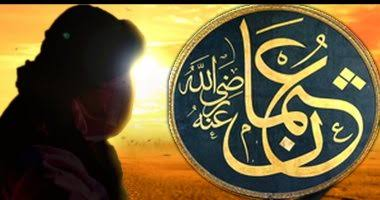

عثمان بن عفان
هو عثمان بن عفان بن أبي العاص بن عبد شمس بن عبد مناف بن قصي، الأموي القرشي، أبو عبد الله وأبو عمرو، أمه أروى بنت كريز بن حبيب بن عبد شمس، من كبار رجال الإسلام الذين اعتز بهم عند ظهوره، ولد بمكة وأسلم بعد البعثة بقليل، كان غنياً، شريفاً في الجاهلية، ومن أعظم أعماله تجهيزه جيش العسرة في السنة التاسعة للهجرة، وكان النبي صلى الله عليه وسلم قد غزا فيه (تبوك)، هو أحد العشر المبشرين بالجنة، تولى الخلافة بعد اغتيال عمر بن الخطاب فهو ثالث الخلفاء الراشدين. كان عهد عثمان عهد فتوحات ففي عهده فتحت أرمينية وأذربيجان وإفريقية وبدأ غزو الروم براً وبحراً، وفتحت جزيرة قبرص، وفي سنة 27 هـ أرسل حملة بحرية لغزو سواحل الأندلس، وهو أول من فكر في فتح القسطنطينية واقتحام أوروبا عن طريق إسبانيا للوصول إليها، وكان أمره بغزو سواحل إسبانيا لهذه الغاية. يرجع إليه الفضل في إزالة الخلاف في قراءة القرآن بجمعه صحفه التي كانت محفوظة عند حفصة بنت عمر بن الخطاب أم المؤمنين، زوج النبي صلى الله عليه وسلم ونسخها في مصحف واحد بمعرفة زيد بن ثابت وآخرين من الصحابة الحافظين للقرآن، وأمر بإحراق ما سواه. اتهم بتولية أصحابه وأقربائه مناصب الدولة، وبسبب ذلك هاج الخارجون عليه من الأمصار، وحاصروه في داره وطلبوا إليه أن يتخلى عن الخلافة فلما أبى ذلك دخلوا عليه وقتلوه ونهبوا داره وعدلوا إلى بيت المال فأخذوا ما فيه. وبمقتل عثمان انعطفت مسيرة التاريخ الإسلامي إلى عهد بدأت فيه الفتن ونشبت فيه الثورات، وانقضى عهد الطبقة الأولى في الإسلام وهي عصر النبي صلى الله عليه وسلم وأبي بكر وعمر رضي الله عنهما وست سنوات من عهد عثمان رضي الله عنه، ففي هذا العهد كان المسلمون على التوحيد الصحيح المخلص مع الألفة واجتماع الكلمة على الكتاب والسنة، وليس هناك عمل قبيح ولا بدعة فاحشة ولا نزع يد من طاعة ولا حسد ولا غل ولا تأول، حتى الذي كان من قتل عثمان وما انتهك منه، قتل عثمان في شهر ذي الحجة في يوم الجمعة، بعد حصار دام شهرين، وكان عمره 82 عاماً.